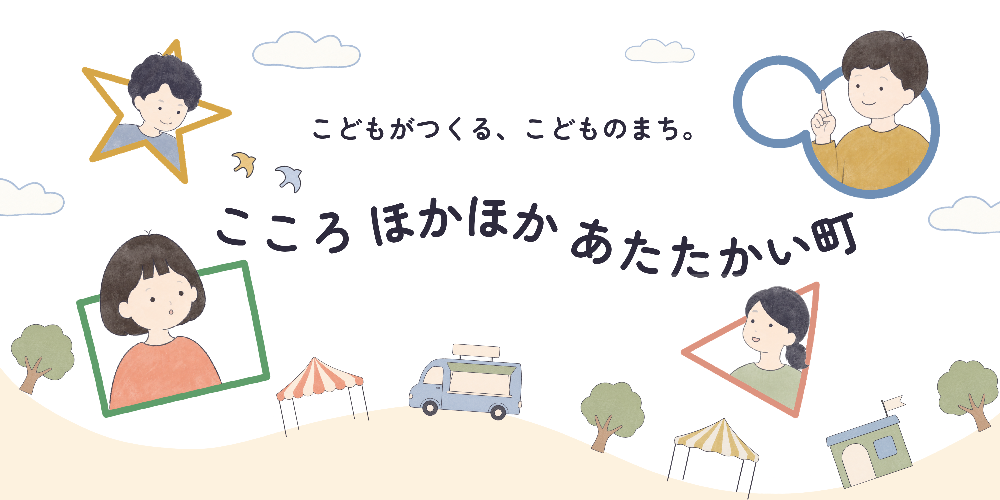
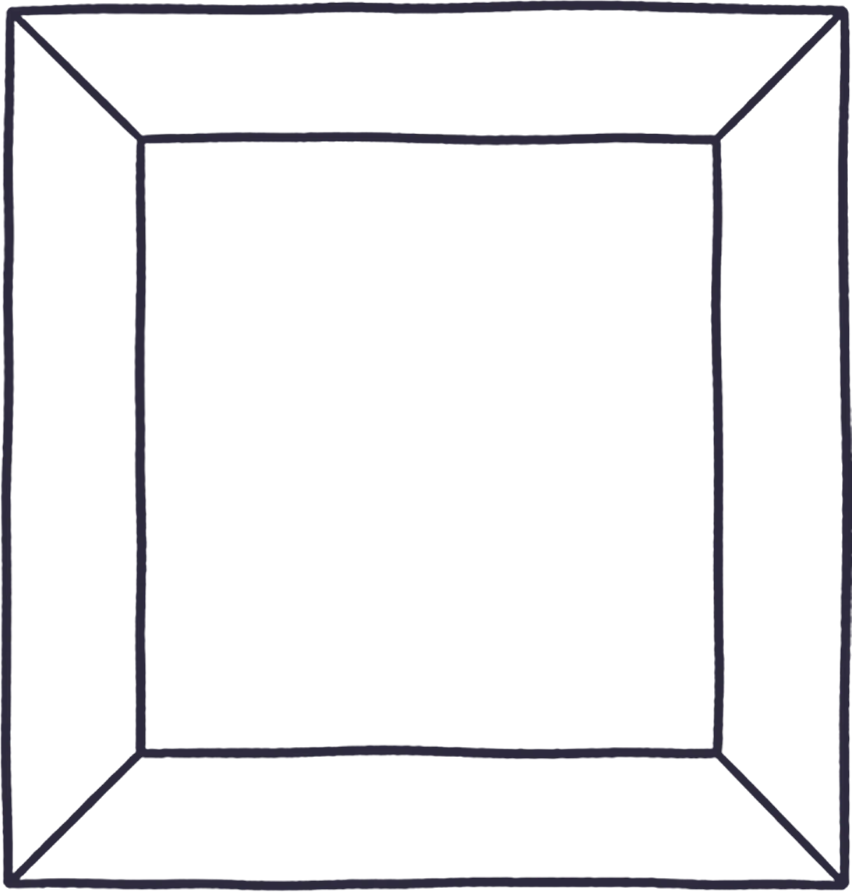

2026.11.21 sat – 22 sun ／ 新潟
7〜15歳の子どもだけが市民になれる、2日間だけの小さな町。
お仕事をして、お給料をもらって、税金をおさめる。
遊びのなかで“社会”まるごとを体験する、あたたかい町です。
まちに入ったら、あなたも市民のひとり。
働いて、暮らして、まちのことを決めていきます。
受付でとうろく。パスポートをもらって、きみもここほかの市民に。
ハローワークでお仕事さがし。やってみたい仕事にチャレンジ！
お仕事をがんばると、まちのお金「ココ」がもらえます。
お給料から税金を納めよう。これがまちを動かすお金になります。
のこったお金で、ごはんを食べたり遊んだり。自由にすごそう。


市役所・銀行・警察・ハローワークといったまちを支える仕事から、お店の見習いまで。いろんなお仕事があります。
お仕事一覧を見る →子どもは「市民」として、大人は「ボランティア」として。
どちらも大歓迎です。
2026年11月21日（土）・22日（日）／新潟
まちの市民になって、2日間を思いっきり楽しもう。
参加の事前登録はこちら ▶※事前登録フォームは準備中です（決まり次第ここにつなぎます）